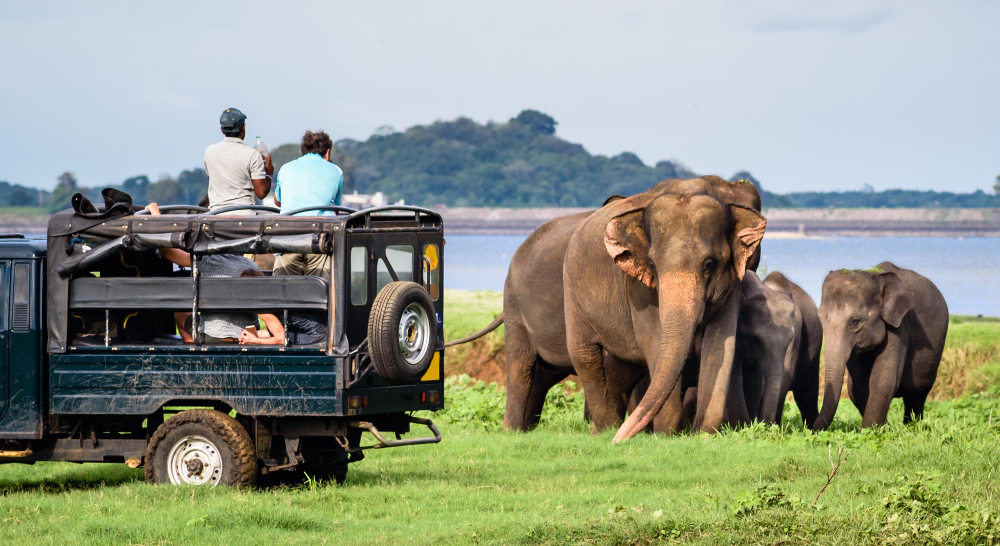

The Best Places to Travel in Southern Province...
Galle Fort
 |
Galle Fort (Sinhala: ගාලු කොටුව Galu Kotuwa; Tamil: காலிக் கோட்டை, romanized: Kālik Kōṭṭai), in the Bay of Galle on the southwest coast of Sri Lanka, was first built in 1588 by the Portuguese, and then fortified by the Dutch in the mid-17th century from 1649 onwards. It is a monument to historical heritage, archeology and architecture, which even after more than 432 years have preserved a modern architecture, thanks to the extensive reconstruction work undertaken by the Sri Lankan Ministry of Archeology. The fort has a rich history, and today it is home to many nations and religions. The Sri Lankan government and many Dutch people no longer have some of the buildings inside the fort we are looking to make this one of the modern wonders of the world. The value of the castle property has been is recognized by UNESCO and this site is listed as a cultural heritage UNESCO World Heritage Site under criteria iv, with its unique presentation "of an urban group reflecting European integration South African architecture and culture from the 16th to the 19th century. " Galle Fort, also known as Dutch Fort or "Ramparts of Galle", is facing the ever-present Boxing tsunami. represents part of the coastal area of Galle town. It has since been restored.
Kataragama Temple
Kataragama temple (Sinhala: රුහුණු කතරගම දේවාලය, lit. 'Ruhuṇu Kataragama Dēvālaya ', Tamil: கதிர்காமம் முருகன் கோயில், lit. 'Katirkāmam Murugan Kōvil') in Kataragama, Sri Lanka, is a temple complex dedicated to the patron deity of Buddhist Kataragama deviyo and the Hindu War God Murugan. It is one of the few religious sites in Sri Lanka that is revered by Buddhists, Hindus, and Muslims and the people of Vedda. In many places a thousand years ago, it was the most sacred forest sanctuary to reach; today it is accessible by road all over the weather. Sacred sites and nearby Kiri Vehera are controlled by Buddhists, The shrines dedicated to Teyvāṉai and Shiva are owned by Hindus and the Muslim mosque. For centuries the area has attracted Tamil Hindus from Sri Lanka and South India who have a hard time. walking. Since the latter part of the 20th century, the site has grown significantly among the Sinhalese Buddhists today make up the majority of pilgrims. The Kataragama deviyo sect has become very popular among the Sinhalese people. Number of myths once Myths are associated with divinity and space, they differ in religion, ethnicity and time. These myths change with the growing thunder of the goddess in Buddhism, as cultural experts and the clergy sought to accept the deity within the Buddhist ideas of atheism. With the change of devotees, i the form of worship and ceremonies has changed from Hinduism to Buddhism. and theology. It is difficult to recreate the true history of a place and the reason for its popularity between Sri Lankans and Indians based on legends and archeological evidence only, although the place seems to have a respectable history. Lack of clear historical records and resulting myths and legends causes a conflict between Buddhists and Hindus regarding ownership and worship in Kataragama. The priests of the temple are known as the Kapuralas and are believed to have descended from the Vedda people. The Veddas, too, have a claim to the temple, the nearest mountain peak through a few myths. There is also a mosque a few graves of holy Muslim men are buried nearby. The temple building is also connected to other similar temples in The eastern province dedicated to Murugan is on its way from Jaffna in the north to Kataragama south of the island; Arunagirinathar crossed this line in the 15th century. Nearby place of the temple complex used for secret witchcraft practices and unusual curses in Sri Lanka (Source or no witchcraft reference). The entire temple complex was declared sacred by the Syrian government Lanka in the 1950s; since then political leaders have contributed to its preservation and preservation
Yala National Park
|  |
Yala (යාල) National Park is the second most visited and second largest area National Park in Sri Lanka, on the border of the Indian Ocean. The park has five blocks, two open to the public, and adjacent parks. Blocks have individual names such as, Ruhuna National Park (Block 1), and Kumana National Park or the combined 'Yala East' place. It is located in the southeastern region of the country, and is located in the South and Uva Provinces Province. The park covers 979 square kilometers (378 sq mi) and is located approximately 300 kilometers (190 mi) from Colombo. Yala was designated a wildlife sanctuary in 1900, and, along with Wilpattu, was one of the wildlife sanctuaries. Sri Lanka's first two national parks, designated in 1938. The park is well-known for its diversity. of wildlife. It is important to preserve the Sri Lankan elephants, Sri Lankan leopards and waterfowl. There are six national parks and three wildlife sanctuaries near Yala. Among the largest is Lunugamehera National Park. The park is located in a dry, dry climate and is mostly rainy northeast. rain. Yala handles a variety of ecosystems from monsoon water forests to pristine waters and wetlands. Icon one of the 70 most important bird sanctuaries (IBAs) in Sri Lanka. Yala has 215 species of birds, including six species Sri Lanka. There are 44 mammals recorded in the park, and it has the highest leopard. congestion in the earth. The area around Yala holds many ancient civilizations. Two important pilgrim areas, Sthulpahuwa and Magul Vihara, found inside the park. The 2004 Indian Ocean tsunami caused severe damage to Yala National Park and 250 people he died in his place. The number of visitors has been growing since 2009, following the security situation at the park better.
Unawatuna Beach
Unawatuna is a coastal town in the Galle region of Sri Lanka. Unawatuna a great tourists in Sri Lanka and known for its sea and corals. It is a suburb of Galle, about 5 kilometers (3.1 mi) southeast of the city center and approximately 108 kilometers (67 mi) south of Colombo. watuna is located at an altitude of 5 meters (16 ft) above sea level. Despite important developments in a decade ago it was still the home of the endangered and endangered purple-faced langur, a timid monkey. species that can only be found in the forests of Sri Lanka.